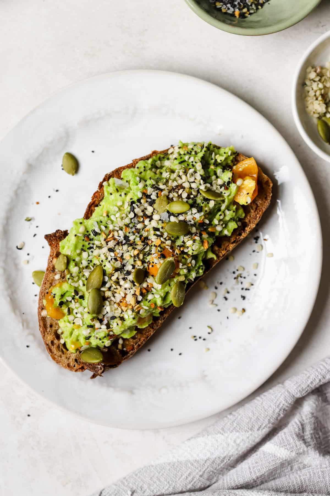
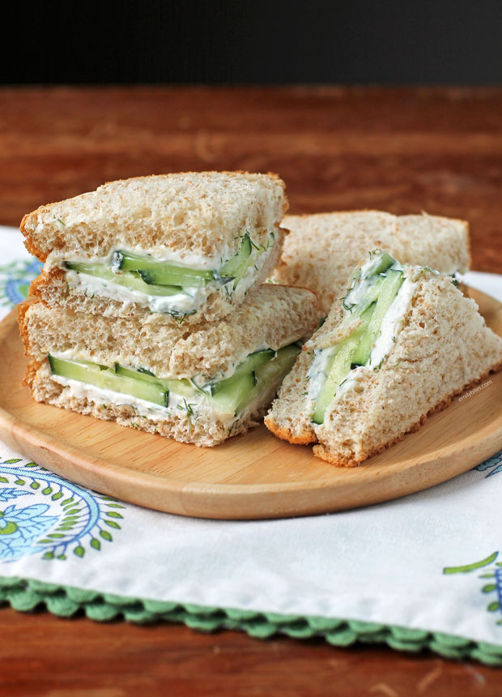

Quick & Tasty Recipes
All recipes are under 10 minutes, student-budget friendly, and absolutely delicious!

Photo by Tera Gigot
Avocado Toast
Toast bread, mash avocado, sprinkle salt, pepper, and chili flakes.
View Recipe
Ingredients:
- 2 slices bread
- 1 ripe avocado
- Salt, pepper, chili flakes
Instructions:
- Toast the bread slices.
- Mash avocado in a bowl.
- Spread avocado on toast.
- Sprinkle seasoning on top.
 Photo by Cooking with Elo
Photo by Cooking with Elo
Banana Smoothie
Blend banana, milk (or plant milk), and a spoon of honey.
View Recipe
Ingredients:
- 1 ripe banana
- 1 cup milk or plant-based milk
- 1 tbsp honey
Instructions:
- Peel and slice the banana.
- Combine all ingredients in a blender.
- Blend until smooth and creamy.
- Serve chilled.
Photo by Taylor Dadds
Egg & Veggie Wrap
Scramble an egg, toss in spinach, and roll in a tortilla.
View Recipe
Ingredients:
- 1 egg
- 1 handful spinach
- 1 tortilla
- Salt & pepper
Instructions:
- Scramble the egg in a pan.
- Add spinach and cook briefly.
- Place mixture in tortilla and roll up.
- Serve warm.
Photo by Brandie Skibinski
Yogurt Parfait
Layer yogurt, granola, and fresh berries for a delicious start.
View Recipe
Ingredients:
- 1 cup yogurt
- 1/2 cup granola
- 1/2 cup mixed berries
Instructions:
- Spoon yogurt into a glass or bowl.
- Add a layer of granola.
- Add a layer of berries.
- Repeat layers and serve.
Photo by My Mini Chefs
Peanut Butter Toast
Spread peanut butter on toast and top with banana slices.
View Recipe
Ingredients:
- 2 slices toast
- 2 tbsp peanut butter
- 1 banana, sliced
Instructions:
- Toast the bread slices.
- Spread peanut butter evenly.
- Top with banana slices.

Photo by Emily Bites
Cucumber Sandwich
Spread cream cheese and layer cucumber slices on soft bread.
View Recipe
Ingredients:
- 2 slices soft bread
- 2 tbsp cream cheese
- 1/2 cucumber, thinly sliced
- Salt & pepper
Instructions:
- Spread cream cheese on both bread slices.
- Layer cucumber slices evenly.
- Sprinkle with salt and pepper.
- Assemble sandwich and slice.